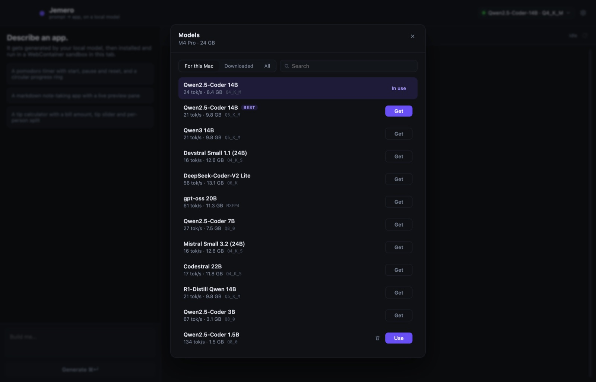

Jemero turns a sentence into a working app, written by an AI model that runs entirely on your Mac. No cloud, no account, no API key.

Open the download and drag Jemero into Applications.
Jemero reads your chip and memory and marks the best model that fits — quantized to stay fast. One click downloads it.
The model writes the code, and it runs live right in the window. Ask for changes in plain words.
Everything runs on your Mac. Nothing you type leaves it.
llama.cpp on the GPU, with a model sized to your memory.
The AI runtime is built in. No terminal, no other apps.
First launch: macOS asks once. Open System Settings → Privacy & Security and click Open Anyway.